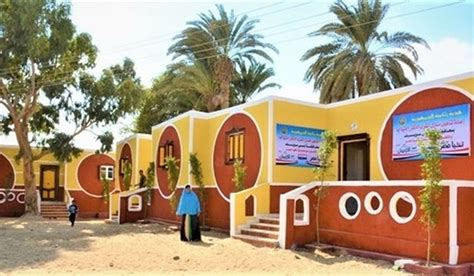

تُعد مبادرة "حياة كريمة" من أكبر المشروعات القومية التي أطلقتها الدولة المصرية في العصر الحديث، وقد جاءت استجابة مباشرة للاحتياجات المُلحة لأكثر من نصف سكان مصر الذين يعيشون في الريف والمناطق الأكثر احتياجًا. وقد أُعلن عن انطلاق المبادرة رسميًا في يناير 2019، بتوجيه من القيادة السياسية، بهدف تحسين مستوى الحياة في القرى المصرية من خلال تدخلات شاملة في مجالات البنية التحتية والخدمات الصحية والتعليمية والاجتماعية والاقتصادية. وتُنفذ المبادرة تحت إشراف رئاسة مجلس الوزراء، وبالتنسيق مع مختلف الوزارات والمحافظات ومؤسسات المجتمع المدني والقطاع الخاص. تستهدف المرحلة الأولى من المبادرة تطوير أكثر من 4,500 قرية وتوابعها، ويستفيد منها نحو 60 مليون مواطن، أي ما يعادل 57% من إجمالي سكان مصر. وقد رُصدت ميزانية تقديرية للمشروع تصل إلى 700 مليار جنيه مصري، يتم تنفيذها على مدار عدة سنوات. وتشمل المبادرة عدة محاور رئيسية، من بينها بناء وتجديد المنازل، ومد شبكات الصرف الصحي ومياه الشرب، وتوصيل الغاز الطبيعي، وتطوير الطرق الداخلية، وإنشاء المجمعات الزراعية، وبناء المدارس والوحدات الصحية والمستشفيات، وإنشاء مراكز الشباب، وتوفير فرص العمل من خلال دعم المشروعات الصغيرة والمتوسطة ومتناهية الصغر. حتى نهاية عام 2023، تم الانتهاء من أكثر من 30% من مشروعات المرحلة الأولى، بما يشمل أكثر من 1,400 قرية، وشهدت هذه المناطق تحسنًا ملموسًا في جودة الحياة والخدمات. فقد تم مد شبكات مياه شرب نقية لأكثر من 2.7 مليون مواطن، وإنشاء أو تطوير ما يزيد عن 1,200 مدرسة، و800 وحدة صحية، وأكثر من 500 مركز شباب، فضلًا عن إنشاء آلاف الوحدات السكنية للفئات الأكثر احتياجًا، وتبطين عشرات الكيلومترات من الترع داخل القرى لتوفير المياه وتقليل الفاقد. أما على صعيد التمكين الاقتصادي، فقد تم تمويل أكثر من 100 ألف مشروع صغير ضمن المبادرة، ما وفر ما يزيد عن 400 ألف فرصة عمل مباشرة وغير مباشرة، بالإضافة إلى دعم الأسر المنتجة، وتوفير تدريبات مهنية في العديد من القرى. كما تم تفعيل خدمات التأمين الصحي، وتوسيع مظلة الحماية الاجتماعية، من خلال التكامل مع برامج "تكافل وكرامة" التي تغطي الملايين من الأسر الفقيرة. إن "حياة كريمة" لا تقتصر على الإنشاءات والبنية التحتية، بل تسعى أيضًا إلى بناء الإنسان المصري وتغيير واقع الريف بشكل جذري، ليصبح بيئة ملائمة للعيش الكريم، والتنمية المتوازنة، والمشاركة المجتمعية الفعالة. ولعل أهم ما يميز هذه المبادرة هو اعتمادها على المشاركة الشعبية من خلال جلسات استماع في القرى، وتفعيل دور المجتمع المدني في التنفيذ، وهو ما أتاح تحقيق استجابة حقيقية لاحتياجات الناس الفعلية وليس مجرد تنفيذ نماذج جاهزة. وقد حازت المبادرة على اهتمام عالمي، حيث تم إدراجها ضمن أفضل المبادرات التنموية على مستوى العالم من قبل منظمة الأمم المتحدة في تقريرها لعام 2021 حول أفضل الممارسات الدولية لتحقيق أهداف التنمية المستدامة. كما أشادت العديد من المؤسسات الدولية بنهج الدولة المصرية في الاستثمار في العنصر البشري والعدالة المكانية. في ضوء كل هذه المؤشرات والحقائق، يمكن القول إن "حياة كريمة" ليست مجرد مشروع تنموي، بل هي مشروع وطني لبناء الجمهورية الجديدة، يتجاوز فكرة تحسين المرافق إلى إعادة صياغة العلاقة بين الدولة والمواطن، وتمكين الريف من أن يكون شريكًا حقيقيًا في التنمية، لا مجرد متلقٍ لها. وهي بداية عهد جديد يُعاد فيه الاعتبار للإنسان المصري أينما كان، ويُرسخ فيه مفهوم العدالة الاجتماعية والكرامة الإنسانية كحق أصيل لا منّة فيه.
